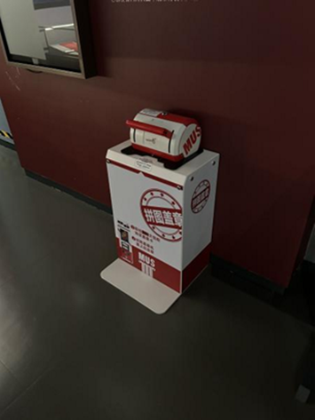
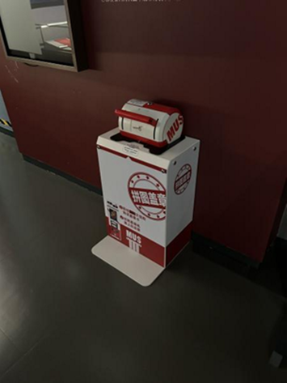
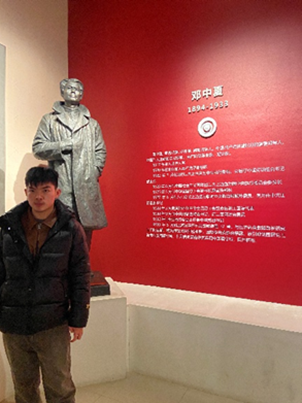
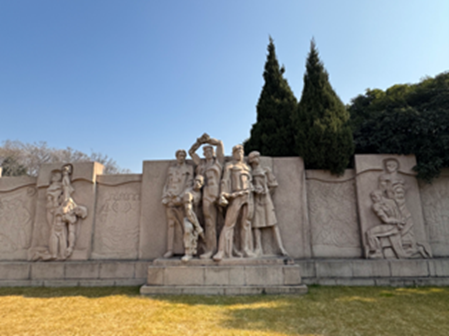
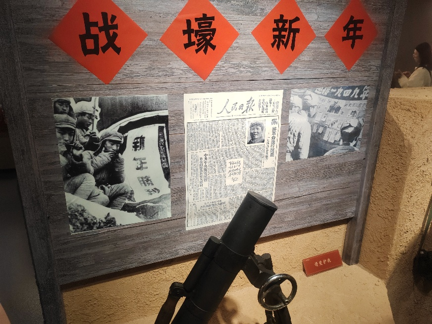
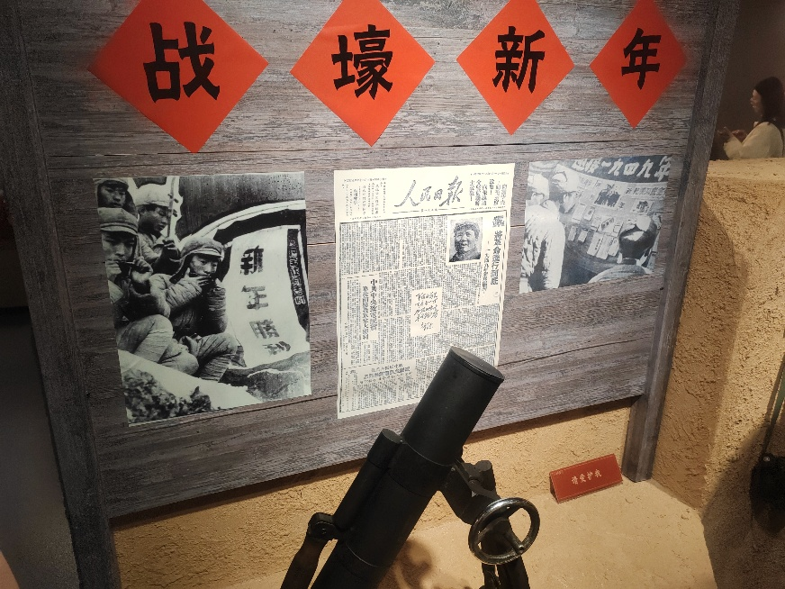
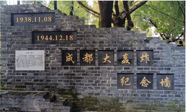
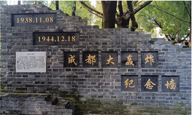

2024年寒假 假期实践 | 数字赋能红色记忆，青年传承革命基因
寒假当中，支部成员们怀着崇敬的心情，分别前往全国各地的红色场馆进行参观学习，重温革命历史，感悟红色精神。以学科特长，挖掘本地红色文化资源的传播特色，为场馆数字化建设建言献策。 第1团支部寒假实践参访活动按家乡分组进行，第一组同学来到了南京的渡江胜利纪念馆和雨花台。 渡江胜利纪念馆内陈列着大量历史照片、文物和影像资料，生动再现了渡江战役的恢宏场景。除文物以外，场馆内还设置了若干多媒体设备，以图像、视频、场景还原、雕塑艺术等方式，全方位再现与铭记了渡江战役的历史情境。 最让人印象深刻的，是展览起始的那幅汉白玉浮雕《胜利渡江》，它是艺术性、符号性和历史性的高度集合体：用料、雕工和实在含义的庄严典雅，使人觉得仿佛站在人民英雄纪念碑的浮雕真迹之前，站在过往真实存在的历史之前，站在浮雕上的每一位战士之前。馆中也设立了集章机，可以看到许多家长带着孩子，顺着展览的路径，拿着本子一个一个打卡，通过这种形式，调动起全民参观学习的积极性。
 

踏入雨花台烈士陵园，一种庄严肃穆的氛围扑面而来，仿佛空气中都弥漫着先烈们的英魂。首先映入眼帘的是那座宏伟的烈士群雕，栩栩如生地刻画了烈士们英勇就义的场景。他们眼神坚定，身姿挺拔，尽管面临着残酷的迫害，却依然展现出不屈的姿态，仿佛在向世人诉说着那段波澜壮阔的革命历史。 走进雨花台烈士纪念馆，丰富的史料、珍贵的文物和逼真的场景复原，将人带回到了那个战火纷飞的年代。馆内陈列着恽代英、邓中夏等革命先辈的遗物，每一件都承载着他们的理想信念和爱国情怀。恽代英的手稿，字迹工整，字里行间透露出他对革命事业的坚定信心和对马克思主义的深刻理解；邓中夏的信件，饱含着他对战友的深情厚谊和对革命胜利的殷切期望。这些展品不仅仅是历史的见证，更是先烈们精神的寄托，展现了他们为国家和民族的未来，不畏艰难险阻、 不惧牺牲的伟大精神。
 第二组同学来到了上海的中共一大会址纪念馆，顾正红纪念馆。 同学们走进历史现场，从石库门到初心之地。在青砖黛瓦的石库门建筑前驻足，跟随讲解员进入展厅。报道战壕新年的人民日报，情景剧人偶，教授识字算数的小黑板……一件件展品以无声的语言诉说着“开天辟地大事变”的艰辛。 在展馆中，陈列着各类影像、文物和史料，作为复旦大学外文学院的学子，看见了陈望道先生翻译《共产党宣言》时“蘸着墨汁吃粽子”并说真理的味道如此甘甜的故事，心中不免产生自豪与敬佩之情。无论是展墙上的烈士遗书，还是复原场景中的热烈讨论，都提醒着当代人——历史并非遥远的符号，而是需要被不断解读和践行的精神资源。在新时代的挑战中，坚守初心、保持奋斗，或许是对这段历史最好的致敬。
 

第三组同学分别前往了江西陈赞贤纪念馆和成都人民公园红色基地。 走进主馆，首先映入眼帘的是陈赞贤的半身雕像，他目光坚定，仿佛在凝视着这片他曾为之奋斗的土地。馆内墙壁上悬挂着的照片、陈列的文物，将陈赞贤烈士短暂却无比壮烈的一生，鲜活地呈现在眼前。 参观过程中，同学被陈赞贤烈士坚定的信仰和无畏的勇气深深打动。他在艰苦的革命环境中，革命信念坚定如磐，对敌人嫉恶如仇，对工农利益铭刻于心，革命意志坚强如钢，不贪金钱,不迷酒色。他的精神，如同一座灯塔，照亮了那个黑暗的时代，给后人留下了极为宝贵的精神财富。 成都一号防空门则是抗日战争艰苦岁月的见证。防空门是当时为了应对日军轰炸而修建的防空设施，它承载着那段岁月的紧张与恐慌，也见证了人民的坚韧与不屈。
 

在本次寒假实践活动中，成员们以红色场馆的中华传统文化为主线，围绕探索大数据时代下的红色文化发展新动能，深入参访了家乡的红色文化资源，坚定了理想信念，增强了历史责任感和使命感，为提升国家文化软实力，促进中华文化走向世界积累经验。